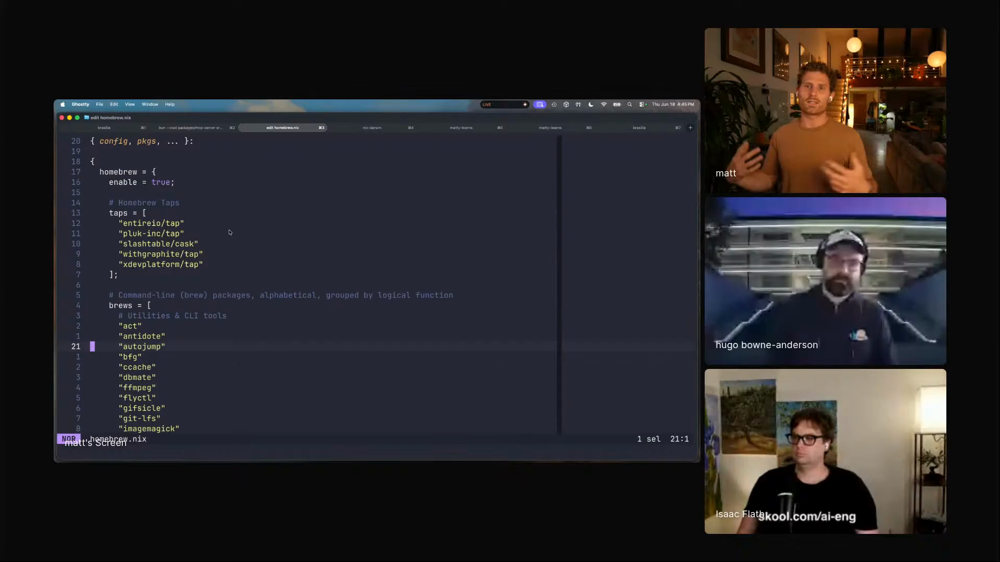
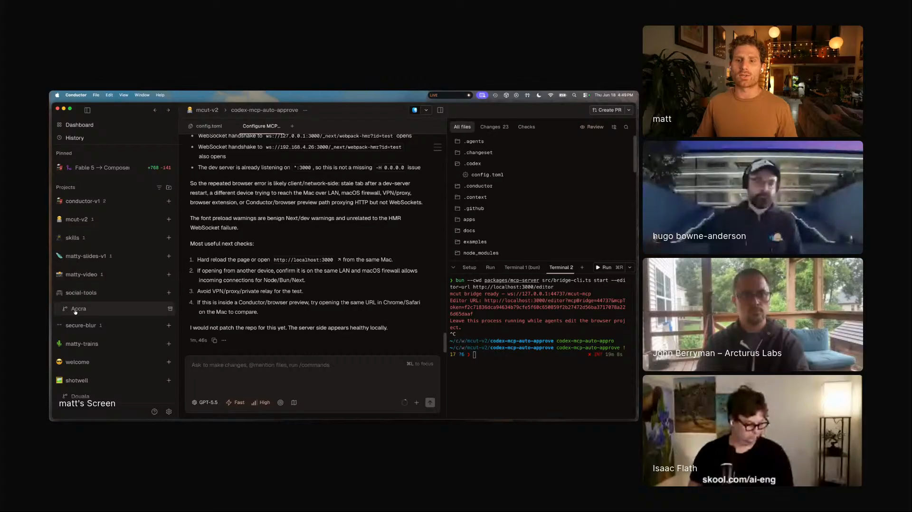
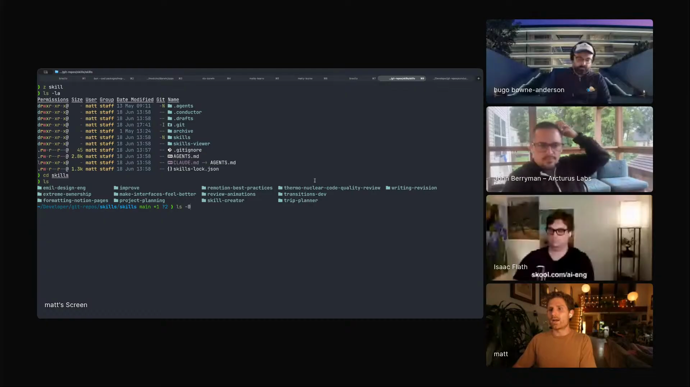
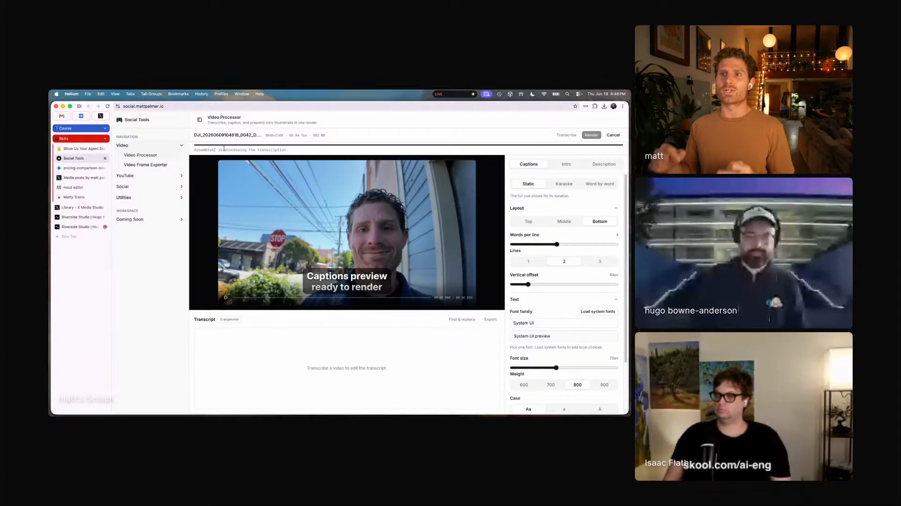
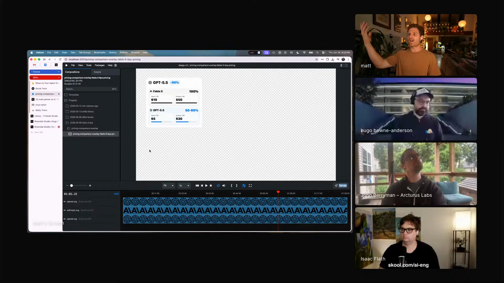
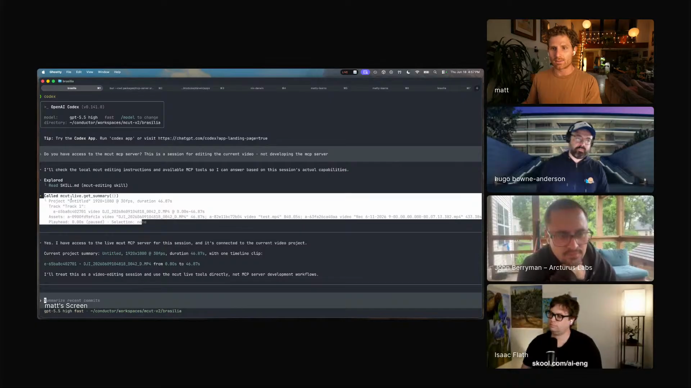

personal-tools-that-dont-die
Nix-managed setup, Conductor projects, worktrees, and private skills make personal software maintainable after the first version.
Matt has an agent working on video production with him: finding moments in transcripts, generating Remotion overlays, and reading a browser video timeline through MCut. He keeps the rest of his personal software just as close. A laptop setup becomes code he can rebuild. Conductor keeps each project open in its own branch. Private skills travel with the project instead of flooding every prompt.

"As someone that loves to build things, now I can just be building things all the time."
Matt keeps a workshop of small tools for himself: a dashboard that turns his walking videos into social clips, a Remotion project that makes overlay graphics, MCut as a browser video editor, a Chrome extension, a mobile app, and dotfiles that rebuild his Mac.
Agents make those tools cheap to start. They help him write the Nix setup, build the dashboard, wire up browser video libraries, and explore ideas that used to cost a whole weekend just to test.
Conductor keeps the tools repairable. Each personal tool lives as a project, and every serious agent session gets its own branch and folder. When a tool annoys him, the fix happens next to the tool, not in a forgotten chat from three weeks ago.

"The process of continuous improvement and compounding means that your projects don't die."


"This tool basically does all of the video processing in the browser."
Matt's video tools begin as a browser dashboard for his own content. It takes walking videos, extracts audio in the browser, gets transcripts from AssemblyAI, makes thumbnails, applies caption presets, and renders output for social platforms.
Then he pushes the same direction further with Remotion overlays and MCut. Remotion gives him code-generated graphics for videos. MCut turns the browser into a real editor with tracks, captions, keyframes, local transcription, and an MCP server.
Through the MCP bridge, Codex can ask MCut for a live summary, inspect the timeline, see timestamps, trigger transcription, and prepare edits against the same browser session a human is using.
"I have a professional video editor making stuff for me, but it's really just AI and code."



"I like just writing slash thermonuclear code quality review in my projects."
Nix-managed setup, Conductor projects, worktrees, and private skills make personal software maintainable after the first version.
A browser video editor exposes tracks, captions, transcript, and timestamps through MCP so an agent can edit against the live timeline.
A Notion MCP augmentation that tells the agent Matt's preferred callouts, toggles, tables, colors, and page structure.
A writing skill with separate references for general and technical writing, grounded in Williams and Bizup's sentence-level clarity advice.
A private-library skill for shaping project work before implementation, installed only into repos where it belongs.
Install the private skill hub into a project, then push useful project skills back into that hub after they prove themselves.
"I intentionally avoid doing global skills, because I feel like that kind of pollutes your context."